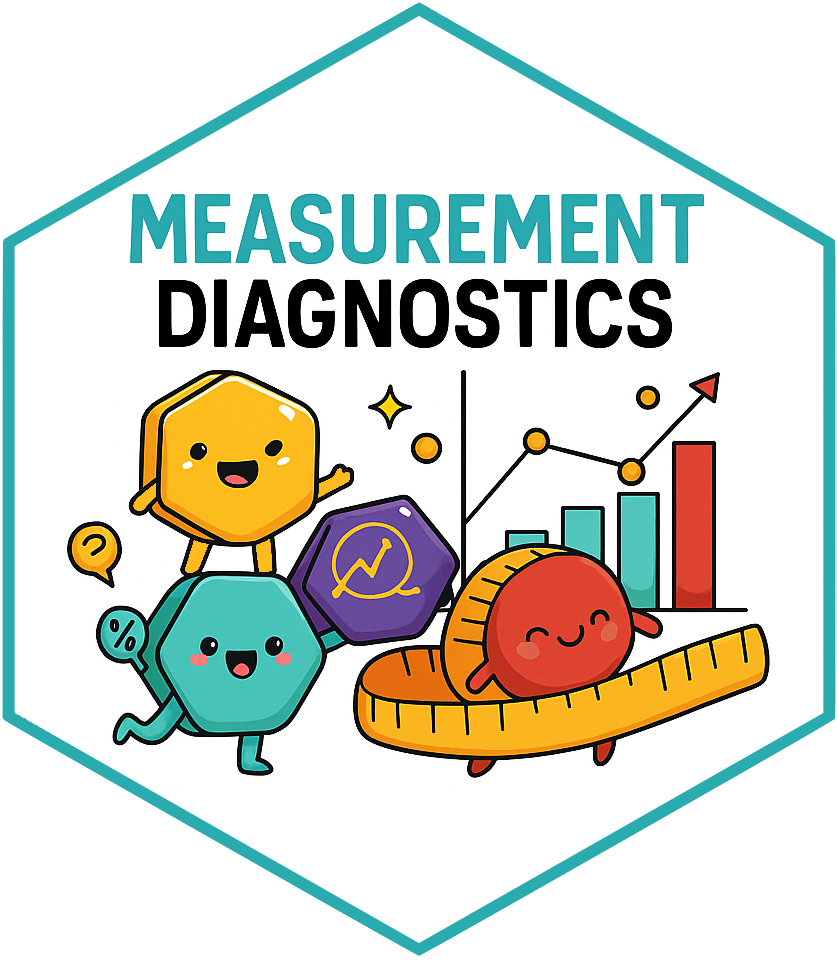

getCandidateCodes(
cdm,
keywords,
exclude = NULL,
domains = "Condition",
vocabularyId = NULL,
standardConcept = "Standard",
searchInSynonyms = FALSE,
searchNonStandard = FALSE,
includeDescendants = TRUE,
includeAncestor = FALSE
)Creating cohorts from scratch using R
Review codelists and cohorts in OMOP CDM
2026-10-15
Introduction
Creating cohorts from scratch using R. Workflow overview:
→
→
Note
All three packages are open source and available on CRAN.
What are we going to build?
Primary (essential) hypertension
Condition-based phenotype
- Start with hypertension codelist
- Create initial base cohort
- Require ≥ 180 days prior observation
- Restrict to adults (≥ 18 years)
- Require a second hypertension record within 365 days
- Exit at end of observation
Warfarin users
Drug-based phenotype
- Start with warfarin codelist
- Create initial exposure cohort
- Require ≥ 365 days prior observation
- Collapse exposures with a ≤ 30-day gap
- Require 365-day washout
Step 1: Creating codelists
CodelistGenerator
The CodelistGenerator R package provides tools to
Explore OMOP CDM vocabularies available in the database
Generate codelists systematically using vocabulary-based search strategies
Generate codelist diagnostics to assess code use and identify potentially missing concepts
Generating candidate concepts
Today, we’ll focus on the getCandidateCodes() function to identify candidate concepts for our two phenotypes.
The function returns candidate concepts for review, together with the search strategy used to identify them.
This allows us to define a systematic and reproducible codelist search strategy.
Create CDM reference
- Load relevant packages
- Create a cdm reference to a synthetic omop database
cdm <- mockCdmFromDataset(datasetName = "synpuf-1k_5.4", source = "duckdb")Create CDM reference
The cdm object provides a reference to the tables in our data source.
We can access individual tables using $. For example, to access the OMOP person table:
cdm$person# A query: ?? x 18
# Database: DuckDB 1.5.6 [unknown@Linux 6.17.0-1022-azure:R 4.6.1//tmp/RtmplT2o9Y/file1e4ab2021e2.duckdb]
person_id gender_concept_id year_of_birth month_of_birth day_of_birth
<int> <int> <int> <int> <int>
1 0 8507 1932 7 1
2 1 8532 1957 9 1
3 2 8532 1934 11 1
4 3 8507 1942 9 1
5 4 8507 1934 7 1
6 5 8532 1930 12 1
7 6 8532 1942 5 1
8 7 8507 1943 4 1
9 8 8532 1951 12 1
10 9 8532 1942 2 1
# ℹ more rows
# ℹ 13 more variables: birth_datetime <dttm>, race_concept_id <int>,
# ethnicity_concept_id <int>, location_id <int>, provider_id <int>,
# care_site_id <int>, person_source_value <chr>, gender_source_value <chr>,
# gender_source_concept_id <int>, race_source_value <chr>,
# race_source_concept_id <int>, ethnicity_source_value <chr>,
# ethnicity_source_concept_id <int>Let’s create our codelists
Primary hypertension codelist
Generate candidate concepts
Our target phenotype is primary (essential) hypertension.
We start by searching for concepts related to "essential hypertension":
hypertensionCodes <- getCandidateCodes(
cdm = cdm,
keywords = "essential hypertension",
domains = "condition",
standardConcept = "Standard",
searchInSynonyms = TRUE,
includeDescendants = TRUE
)
hypertensionCodes[1;34mi[0m This is a candidate code searh, see: <link to vignette>
[3mCandidate codes[0m generated using [32mCodelistGenerator[0m ([1m4.1.0[0m):
getCandidateCodes(
cdm = cdm,
keywords = "essential hypertension",
exclude = NULL,
domains = "condition",
vocabularyId = "snomed",
standardConcept = "Standard",
searchInSynonyms = TRUE,
searchNonStandard = FALSE,
includeDescendants = TRUE,
includeAncestor = FALSE
)
# A tibble: 21 × 12
concept_id found_from concept_name vocabulary_version domain_id vocabulary_id
* <int> <chr> <chr> <chr> <chr> <chr>
1 312648 From init… Benign esse… v5.0 29-APR-16 Condition SNOMED
2 314103 From init… Benign esse… v5.0 29-APR-16 Condition SNOMED
3 314423 From init… Benign esse… v5.0 29-APR-16 Condition SNOMED
4 317898 From init… Malignant e… v5.0 29-APR-16 Condition SNOMED
5 320128 From init… Essential h… v5.0 29-APR-16 Condition SNOMED
6 320456 From init… Benign esse… v5.0 29-APR-16 Condition SNOMED
7 321638 From init… Benign esse… v5.0 29-APR-16 Condition SNOMED
8 4034031 From init… Benign esse… v5.0 29-APR-16 Condition SNOMED
9 4058987 From init… High-renin … v5.0 29-APR-16 Condition SNOMED
10 4062811 From init… Benign esse… v5.0 29-APR-16 Condition SNOMED
# ℹ 11 more rows
# ℹ 6 more variables: concept_class_id <chr>, standard_concept <chr>,
# concept_code <chr>, valid_start_date <date>, valid_end_date <date>,
# invalid_reason <chr>HypertensPrimary hypertension codelist
Do all candidate concepts represent the phenotype we want?
Some candidate concepts represent essential hypertension in an obstetric context:
[1] "Benign essential hypertension"
[2] "Benign essential hypertension complicating pregnancy, childbirth and the puerperium - delivered"
[3] "Benign essential hypertension complicating pregnancy, childbirth and the puerperium - not delivered"
[4] "Malignant essential hypertension"
[5] "Essential hypertension"
[6] "Benign essential hypertension complicating pregnancy, childbirth and the puerperium - delivered with postnatal complication"
[7] "Benign essential hypertension complicating pregnancy, childbirth and the puerperium"
[8] "Benign essential hypertension complicating AND/OR reason for care during pregnancy"
[9] "High-renin essential hypertension"
[10] "Benign essential hypertension complicating pregnancy, childbirth and the puerperium with postnatal complication"
[11] "Essential hypertension complicating AND/OR reason for care during childbirth"
[12] "Benign essential hypertension complicating AND/OR reason for care during puerperium"
[13] "Labile essential hypertension"
[14] "Systolic essential hypertension"
[15] "Benign essential hypertension complicating AND/OR reason for care during childbirth"
[16] "Essential hypertension in obstetric context"
[17] "Low-renin essential hypertension"
[18] "Benign essential hypertension in obstetric context"
[19] "Essential hypertension complicating AND/OR reason for care during pregnancy"
[20] "Essential hypertension complicating AND/OR reason for care during puerperium"
[21] "Postpartum pre-existing essential hypertension" Primary hypertension codelist
If we identify unwanted candidate concepts that can be systematically captured by keywords, we can refine our search strategy using exclusion terms:
hypertensionCodes <- getCandidateCodes(
cdm = cdm,
keywords = "essential hypertension",
exclude = c("pregnancy", "childbirth", "puerperium", "obstetric", "postpartum", "postnatal"),
domains = "condition",
standardConcept = "Standard",
searchInSynonyms = TRUE,
includeDescendants = TRUE
)
hypertensionCodes[1;34mi[0m This is a candidate code searh, see: <link to vignette>
[3mCandidate codes[0m generated using [32mCodelistGenerator[0m ([1m4.1.0[0m):
getCandidateCodes(
cdm = cdm,
keywords = "essential hypertension",
exclude = c("pregnancy", "childbirth", "puerperium", "obstetric", "postpartum", "postnatal"),
domains = "condition",
vocabularyId = "snomed",
standardConcept = "Standard",
searchInSynonyms = TRUE,
searchNonStandard = FALSE,
includeDescendants = TRUE,
includeAncestor = FALSE
)
# A tibble: 7 × 12
concept_id found_from concept_name vocabulary_version domain_id vocabulary_id
* <int> <chr> <chr> <chr> <chr> <chr>
1 312648 From initi… Benign esse… v5.0 29-APR-16 Condition SNOMED
2 317898 From initi… Malignant e… v5.0 29-APR-16 Condition SNOMED
3 320128 From initi… Essential h… v5.0 29-APR-16 Condition SNOMED
4 4058987 From initi… High-renin … v5.0 29-APR-16 Condition SNOMED
5 4159755 From initi… Labile esse… v5.0 29-APR-16 Condition SNOMED
6 4180283 From initi… Systolic es… v5.0 29-APR-16 Condition SNOMED
7 4263067 From initi… Low-renin e… v5.0 29-APR-16 Condition SNOMED
# ℹ 6 more variables: concept_class_id <chr>, standard_concept <chr>,
# concept_code <chr>, valid_start_date <date>, valid_end_date <date>,
# invalid_reason <chr>Primary hypertension codelist
Note
A refined search strategy does not mean we have a final codelist.
CodelistGenerator helps us define a reproducible search strategy and generate a preliminary codelist.
Before cohort construction, this preliminary codelist is clinically reviewed.
Once cohorts are created, diagnostics provide further evidence to support additional codelist review and refinement.
Warfarin codelist
Generate candidate concepts
We repeat the process for warfarin, starting with an initial search strategy:
warfarinCodes <- getCandidateCodes(
cdm = cdm,
keywords = "warfarin",
domains = "drug",
standardConcept = "Standard",
searchInSynonyms = TRUE,
includeDescendants = TRUE
)
warfarinCodes[1;34mi[0m This is a candidate code searh, see: <link to vignette>
[3mCandidate codes[0m generated using [32mCodelistGenerator[0m ([1m4.1.0[0m):
getCandidateCodes(
cdm = cdm,
keywords = "warfarin",
exclude = NULL,
domains = "drug",
vocabularyId = c("cpt4", "dpd", "hcpcs", "multilex", "rxnorm"),
standardConcept = "Standard",
searchInSynonyms = TRUE,
searchNonStandard = FALSE,
includeDescendants = TRUE,
includeAncestor = FALSE
)
# A tibble: 194 × 12
concept_id found_from concept_name vocabulary_version domain_id vocabulary_id
* <int> <chr> <chr> <chr> <chr> <chr>
1 1310149 From init… Warfarin v5.0 29-APR-16 Drug RxNorm
2 40093130 From init… Warfarin In… v5.0 29-APR-16 Drug RxNorm
3 40093131 From init… Warfarin In… v5.0 29-APR-16 Drug RxNorm
4 40093132 From init… Warfarin Or… v5.0 29-APR-16 Drug RxNorm
5 40093133 From init… Warfarin Or… v5.0 29-APR-16 Drug RxNorm
6 40093134 From init… Warfarin Or… v5.0 29-APR-16 Drug RxNorm
7 40121983 From init… Warfarin Or… v5.0 29-APR-16 Drug RxNorm
8 40121984 From init… Warfarin Or… v5.0 29-APR-16 Drug RxNorm
9 40163507 From init… Warfarin So… v5.0 29-APR-16 Drug RxNorm
10 40163508 From init… Warfarin So… v5.0 29-APR-16 Drug RxNorm
# ℹ 184 more rows
# ℹ 6 more variables: concept_class_id <chr>, standard_concept <chr>,
# concept_code <chr>, valid_start_date <date>, valid_end_date <date>,
# invalid_reason <chr>Step 2: Constructing cohorts
CohortConstructor
CohortConstructor provides tools to create and manipulate cohorts using the OMOP CDM.
- Create base cohorts from codelists
- Apply demographic and observation requirements
- Apply additional clinical requirements
- Define cohort entry and exit
- Combine, collapse, and manipulate cohort records
Primary hypertension cohort
We will progressively apply our cohort inclusion criteria to identify adults with primary (essential) hypertension.
- Create a base cohort from our essential hypertension codelist
- Keep the first qualifying entry
- Require ≥ 180 days of prior observation
- Restrict to age ≥ 18 years
- Require a second hypertension record within 365 days
- Exit at end of observation
Primary hypertension cohort
→ Create the base cohort
We first create a base cohort from condition records corresponding to concepts in our preliminary hypertension codelist:
hypertensionCodelist <- list("essential_hypertension" = hypertensionCodes$concept_id)
cdm$essential_hypertension_base <- conceptCohort(
cdm = cdm,
conceptSet = hypertensionCodelist,
name = "essential_hypertension_base"
)At this stage, each qualifying hypertension record can contribute to cohort entry.
| Reason |
Variable name
|
|||
|---|---|---|---|---|
| number_records | number_subjects | excluded_records | excluded_subjects | |
| synpuf-1k; essential_hypertension | ||||
| Initial qualifying events | 10,321 | 755 | 0 | 0 |
| Record in observation | 10,321 | 755 | 0 | 0 |
| Not missing record date | 10,321 | 755 | 0 | 0 |
| Merge overlapping records | 6,316 | 755 | 4,005 | 0 |
Primary hypertension cohort
→ Apply the inclusion criteria
Now we apply inclusion criteria in a pipeline-fashion to refine the base cohort:
cdm$essential_hypertension <- cdm$essential_hypertension_base |>
# Keep the first qualifying entry
requireIsFirstEntry(
name = "essential_hypertension"
) |>
# Age ≥18 and ≥180 days of prior observation
requireDemographics(
ageRange = c(18, 150),
minPriorObservation = 180,
name = "essential_hypertension"
) |>
# Require another hypertension record within 365 days
requireCohortIntersect(
targetCohortTable = "essential_hypertension_base",
window = c(1, 365),
intersections = c(1, Inf),
name = "essential_hypertension"
) |>
# Follow until the end of observation
exitAtObservationEnd(
name = "essential_hypertension"
)Primary hypertension cohort
Cohort attrition
How does each requirement affect the number of people meeting our phenotype definition?
| Reason |
Variable name
|
|||
|---|---|---|---|---|
| number_records | number_subjects | excluded_records | excluded_subjects | |
| synpuf-1k; essential_hypertension | ||||
| Initial qualifying events | 10,321 | 755 | 0 | 0 |
| Record in observation | 10,321 | 755 | 0 | 0 |
| Not missing record date | 10,321 | 755 | 0 | 0 |
| Merge overlapping records | 6,316 | 755 | 4,005 | 0 |
| Restricted to first entry | 755 | 755 | 5,561 | 0 |
| Age requirement: 18 to 150 | 755 | 755 | 0 | 0 |
| Sex requirement: Both | 755 | 755 | 0 | 0 |
| Prior observation requirement: 180 days | 262 | 262 | 493 | 493 |
| Future observation requirement: 0 days | 262 | 262 | 0 | 0 |
| Require 1 or more intersections with cohort essential_hypertension. Intersection window: 1 to 365 days relative to cohort_start_date | 190 | 190 | 72 | 72 |
| Exit at observation period end date, limited to current observation period | 190 | 190 | 0 | 0 |
Note
Because the requirements were applied sequentially, we can see where cohort entries are lost at each step of the phenotype definition.
Warfarin cohort
We want to identify new users of warfarin.
- Create a base cohort from our warfarin codelist
- Collapse exposures separated by ≤ 30 days
- Require ≥ 365 days of prior observation
- Require no warfarin exposure in the previous 365 days
Warfarin cohort
→ Create the base cohort
We first create a base cohort from drug exposure records corresponding to concepts in our preliminary warfarin codelist:
warfarinCodelist <- list("warfarin" = warfarinCodes$concept_id)
cdm$warfarin_base <- conceptCohort(
cdm = cdm,
conceptSet = warfarinCodelist,
name = "warfarin_base"
)At this stage, qualifying warfarin exposures can contribute to cohort entries.
| Reason |
Variable name
|
|||
|---|---|---|---|---|
| number_records | number_subjects | excluded_records | excluded_subjects | |
| synpuf-1k; warfarin | ||||
| Initial qualifying events | 407 | 226 | 0 | 0 |
| Record in observation | 407 | 226 | 0 | 0 |
| Not missing record date | 407 | 226 | 0 | 0 |
| Merge overlapping records | 378 | 226 | 29 | 0 |
Warfarin cohort
→ Create treatment episodes and identify new users
We now combine nearby exposures into treatment episodes and apply our new-user criteria:
cdm$warfarin_new_users <- cdm$warfarin_base |>
# Collapse exposures separated by ≤30 days
collapseCohorts(
gap = 30,
name = "warfarin_new_users"
) |>
# Require ≥365 days of prior observation
requireDemographics(
minPriorObservation = 365,
name = "warfarin_new_users"
) |>
# No warfarin exposure during the previous 365 days
requireCohortIntersect(
targetCohortTable = "warfarin_base",
window = c(-365, -1),
intersections = 0,
name = "warfarin_new_users"
)Warfarin cohort
New-user cohort attrition
How do our requirements affect the number of warfarin treatment episodes?
| Reason |
Variable name
|
|||
|---|---|---|---|---|
| number_records | number_subjects | excluded_records | excluded_subjects | |
| synpuf-1k; warfarin | ||||
| Initial qualifying events | 407 | 226 | 0 | 0 |
| Record in observation | 407 | 226 | 0 | 0 |
| Not missing record date | 407 | 226 | 0 | 0 |
| Merge overlapping records | 378 | 226 | 29 | 0 |
| Collapse cohort with a gap of 30 days. | 350 | 226 | 28 | 0 |
| Age requirement: 0 to 150 | 350 | 226 | 0 | 0 |
| Sex requirement: Both | 350 | 226 | 0 | 0 |
| Prior observation requirement: 365 days | 222 | 171 | 128 | 55 |
| Future observation requirement: 0 days | 222 | 171 | 0 | 0 |
| Require 0 intersections with cohort warfarin. Intersection window: -365 to -1 days relative to cohort_start_date | 150 | 145 | 72 | 26 |
Step 3: Reviewing cohorts
PhenotypeR
PhenotypeR provides a standardised set of diagnostics to review and evaluate phenotypes created using the OMOP CDM.
Database Diagnostics
Summarise the database metadata including:
- Snapshot
- Summary of the person table
- Summary of the observation period
- Summary of the clinical tables (e.g., condition_occurrence) where concepts from the codelists defining the cohorts are found.
Note
Database diagnostics use functionality from OmopSketch.
Codelist Diagnostics
- Summarise the codelist associated with your cohort including:
- Achilles codes use (only if ACHILLES tables are present)
- Orphan codes use (only if ACHILLES tables are present)
- Cohort code use
- Measurement code use (only if measurement concepts are present in your codelist)
- Drug diagnostics (only if drug concepts are present in your codelist)
Note

Codelist diagnostics use functionality from CodelistGenerator to evaluate the use of concepts from our codelists in the OMOP CDM.
If the codelists contain measurement concepts, MeasurementDiagnostics is used to evaluate those concepts.
Cohort Diagnostics
Cohort Diagnostics
Summarise and evaluate the cohorts including:
- Cohort count & attrition
- Cohort characteristics — Baseline characteristics of the cohort
- Large-scale characteristics — Clinical records observed in different time windows
- Compare cohorts — Overlap and timing between cohorts (if multiple cohorts)
- Cohort survival — Survival until death (if death table is available)
Note

Cohort diagnostics use functionality from CohortCharacteristics to characterise and compare cohorts, and CohortSurvival to perform survival analyses.
Population Diagnostics
- Contextualises the frequency of your study cohorts in the database calculating:
- Incidence
- Period Prevalence
Note
Population diagnostics use functionality from IncidencePrevalence to estimate the incidence and prevalence of our cohorts in the database population.
Run diagnostics together
Rather than running each diagnostic separately, phenotypeDiagnostics() allows us to run them together.
result <- phenotypeDiagnostics(
cohort,
databaseDiagnostics = list(),
codelistDiagnostics = list(),
cohortDiagnostics = list(),
populationDiagnostics = list()
)We can choose which diagnostics to run and customise their parameters.
result <- phenotypeDiagnostics(
cohort,
databaseDiagnostics = list(),
codelistDiagnostics = list(),
cohortDiagnostics = list(
cohortSample = 1000
),
populationDiagnostics = NULL
)Run diagnostics of hypertension and warfarin cohorts together
We created our two cohort separately. To run phenotyper, we can bring them together into a single cohort table and then run PhenotypeR functions to this table.
# A tibble: 2 × 8
cohort_definition_id cohort_name cdm_version vocabulary_version age_range
<int> <chr> <chr> <chr> <chr>
1 1 essential_hyper… 5.4 v5.0 29-APR-16 18_150
2 2 warfarin 5.4 v5.0 29-APR-16 0_150
# ℹ 3 more variables: sex <chr>, min_prior_observation <dbl>,
# min_future_observation <dbl>Run phenotype diagnostics
Now we can evaluate both phenotypes using the same standardised diagnostic workflow.
result <- phenotypeDiagnostics(cohort = cdm$phenotypes)Then we can use the function shinyDiagnostics to create a shinyApp to review results:
shinyDiagnostics(result = result, directory = here())Explore the PhenotypeR results
Try it yourself!
Scan the QR code
or
👉 Click here to open the Shiny app
or enter this link:
https://dpa-pde-oxford.shinyapps.io/OHDSI-US-PhenotypeR/
PhenotypeR
👉 Package website
👉 CRAN link
👉 GitHub link
👉 Manual 📧

OHDSI-US 2026 PhenotypeR Workshop